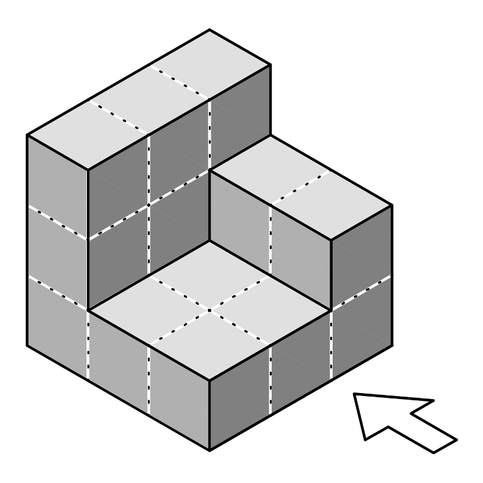
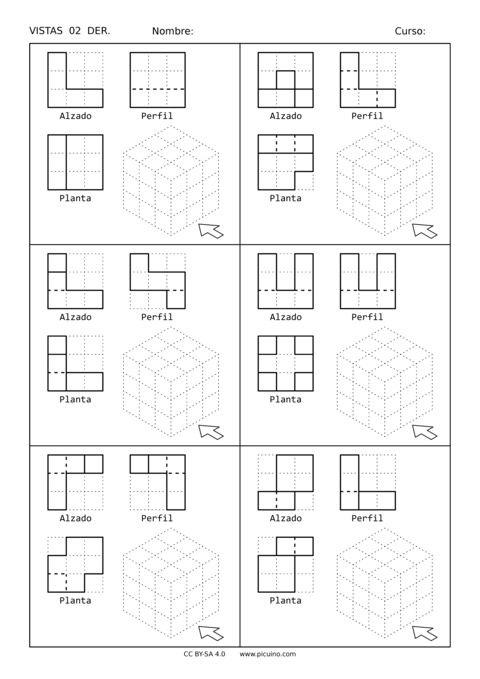
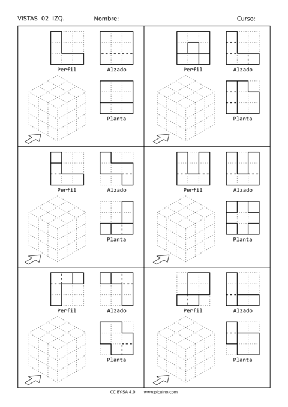
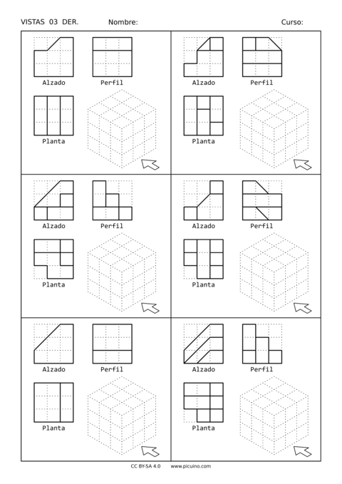
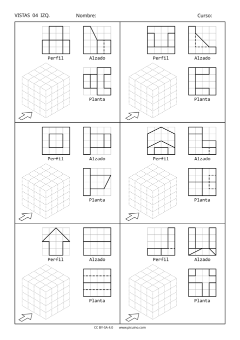
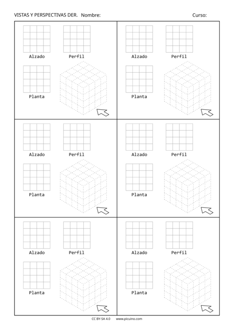
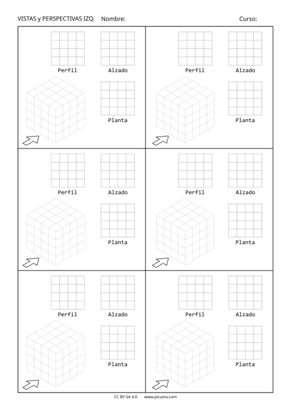

Perspectiva isomètrica
La perspectiva és una manera de representar tres dimensions en un full pla. En aquesta representació es pot veure alhora la cara frontal, el perfil i l'objecte de l'objecte. Utilitzarem la perspectiva isomètrica, que utilitza la mateixa mesura per als tres eixos principals (x, y, z).

A continuació, es mostren els exercicis per obtenir una perspectiva isomètrica de les figures, graduats en dificultat des del nivell bàsic fins al nivell més complex amb objectes corbats.
Tots els exercicis tenen una versió amb el Sistema Europeu de View (alçat a la dreta) i una altra versió poc convencional en la qual s’ha escollit l’elevació a l’esquerra de la figura i al perfil de la dreta.

: Descarregueu: Right Raised. Format PDF. <Dibuix/dibuix-vers-der-01.pdf>
: Descarregueu: Right Raised. Imatges en format PNG. <Dibuix/dibuix-versos-der-01-images.zip>
: Descarregueu: Right Raised. Format editable SVG. <Drawing/Drawing-Vista-der-01.svg>

: Descarregueu: Left Lifting. Format PDF. <Drawing/Drawing-Verses-IZQ-01.pdf>
: Descarregueu:
`Left Lifting. Imatges en format PNG. <Dibuix/Dibuix-Verses-IZQ-01-Imatges.zip> `
: Descarregueu: Left Lifting. Format editable SVG. <Drawing/Drawing-Verses-IZQ-01.svg>

: Descarregueu: Right Raised. Format PDF. <Drawing/Drawing-Duer-02.pdf>
: Descarregueu: Right Raised. Imatges en format PNG. <Dibuix/dibuix-versos-der-02-images.zip>
: Descarregueu: Right Raised. Format editable SVG. <Drawing/Drawing-Vista-der-02.svg>

: Descarregueu: Left Lifting. Format PDF. <Dibuix/Dibuix-Verses-IZQ-02.pdf>
: Descarregueu: Left Lifting. Imatges en format PNG. <Dibuix/Dibuix-Verses-IZQ-02-IMages.zip>
: Descarregueu: Left Lifting. Format editable SVG. <Dibuix/Dibuix-Verses-IZQ-02.svg>

: Descarregueu: Right Raised. Format PDF. <Drawing/Drawing-Vista-der-03.pdf>
: Descarregueu: Right Raised. Imatges en format PNG. <Drawing/Drawing-Vista-der-03-images.zip>
: Descarregueu: Right Raised. Format editable SVG. <Dibuix/dibuix-vers-der-03.svg>

: Descarregueu: Left Lifting. Format PDF. <Drawing/Drawing-Verses-IZQ-03.pdf>
: Descarregueu: Left Lifting. Imatges en format PNG. <Dibuix/Dibuix-Verses-IZQ-03-Images.zip>
: Descarregueu: Left Lifting. Format editable SVG. <Dibuix/Dibuix-Verses-IZQ-03.svg>

: Descarregueu: Right Raised. Format PDF. <Dibuix/dibuix-vers-der-04.pdf>
: Descarregueu: Right Raised. Imatges en format PNG. <Dibuix/dibuix-versos-der-04-images.zip>
: Descarregueu: Right Raised. Format editable SVG. <Dibuix/dibuix-deu a-04.svg>

: Descarregueu: Left Lifting. Format PDF. <Dibuix/Dibuix-Verses-IZQ-04.pdf>
: Descarregueu: Left Lifting. Imatges en format PNG. <Dibuix/Dibuix-Verses-IZQ-04-IMages.zip>
: Descarregueu: Left Lifting. Format editable SVG. <Dibuix/Dibuix-Verses-IZQ-04.svg>

: Descarregueu: Right Raised. Format PDF. <Dibuix/dibuix-versos-der-05.pdf>
: Descarregueu: Right Raised. Imatges en format PNG. <Dibuix/dibuix-deu a-05-images.zip>
: Descarregueu: Right Raised. Format editable SVG. <Drawing/Drawing-Vista-der-05.svg>

: Descarregueu: Left Lifting. Format PDF. <Dibuix/Dibuix-Verses-IZQ-05.pdf>
: Descarregueu:
`Left Lifting. Imatges en format PNG. <Dibuix/Dibuix-Verses-IZQ-05-Imatges.Zip> `
: Descarregueu: Left Lifting. Format editable SVG. <Dibuix/Dibuix-Verses-IZQ-05.svg>

: Descarregueu: Right Raised. Format PDF. <Drawing/Drawing-Plantilla-Isometric-4-Der.pdf>
: Descarregueu: Right Raised. Format editable SVG. <Dibuix/Dibuix-Plantilla-Isomètric-4-Der.svg>

: Descarregueu: Left Lifting. Format PDF. <Drawing/Drawing-Plantilla-Isometric-4-IZQ.PDF>
: Descarregueu: Left Lifting. Format editable SVG. <Drawing/Drawing-Plantilla-Isometric-4-IZQ.SVG>
Exercicis per construir tres dimensions amb paper retallat (Papercraft) al taller de tecnologia:
: Ref: Workshop-Papercraft
{kind=link}
{kind=link}
{kind=link}
{kind=link}
{kind=link}
{kind=link}
{kind=link}